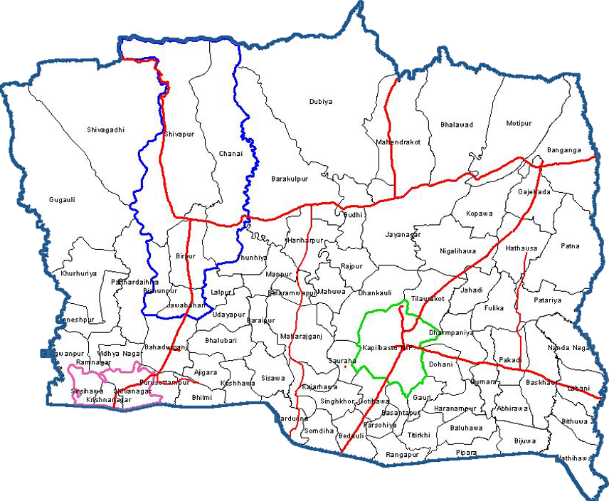

हाम्रो कपिलवस्तु

कपिलवस्तुकाे नयाँ स्थानिय तह :
नगरपालिका (६) :
कपिलवस्तु नगरपालिका, बुद्धभूमि नगरपालिका, शिवराज नगरपालिका, महाराजगन्ज नगरपालिका, कृष्णनगर नगरपालिका, वाणगंगा नगरपालिका
गाउँपालिका (४) :
मायादेवी गाउँपालिका, यशोधरा गाउँपालिका, शुद्धोधन गाउँपालिका, विजयनगर गाउँपालिका